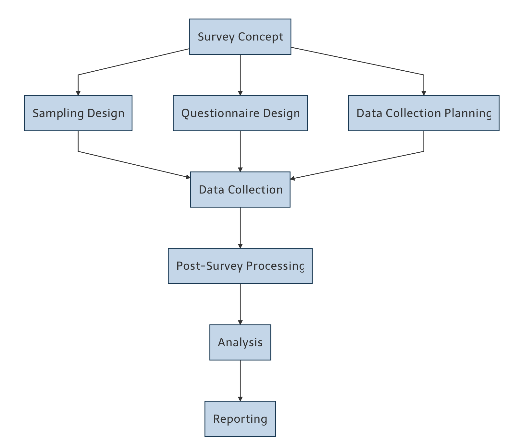

Dr. Gianluca Boo, WorldPop, University of Southampton
2025-09-17

Coverage (under-/over-coverage)
Up-to-dateness
Accurate identifiers, contact info, location
Notation: Population (\(N\)), sample (\(n\)), variable (\(y_i4\), total \(\)Y4), mean (\(barY\))
- Inclusion probabilities (i) and pairwise (*)
- Sampling weight (w_i = 1/_i)
Variance (finite population correction): [ ({SRS}) = (1-) ,S^2 = ^N (y_i-{Y})^2 ]
Unbiased variance estimator: [ ({SRS}) = (1-) ,s^2 = (y_i-{y})^2 ]
Target margin of error (E) at confidence level (1-): [ n = ] Unknown (S^2)? Use pilot estimate or conservative proxy.
set.seed(123)
N <- 10000
pop <- data.frame(id = 1:N,
y = rlnorm(N, meanlog = 2, sdlog = 0.5))
N
# Draw SRSWOR sample of size n
n <- 500
s_ids <- sample(pop$id, size = n, replace = FALSE)
samp <- pop[pop$id %in% s_ids, ]
# Estimators
ybar_hat <- mean(samp$y)
Y_hat <- N * ybar_hat
# SRS variance estimator for mean
s2 <- var(samp$y)
var_ybar <- (1 - n/N) * s2 / n
se_ybar <- sqrt(var_ybar)
list(ybar_hat = ybar_hat, Y_hat = Y_hat, se_ybar = se_ybar)set.seed(42)
N <- 2000
pop <- data.frame(id = 1:N,
size = runif(N, 10, 100),
y = rpois(N, lambda = 0.3 * runif(N, 10, 100)))
n <- 200
p <- pop$size / sum(pop$size)
s_ids <- sample(pop$id, size = n, replace = TRUE, prob = p)
# Unique sampled units for HT with WR approx (use duplicates with counts if needed)
uniq <- unique(s_ids)
pi_i <- 1 - (1 - p[uniq])^n
w_i <- 1/pi_i
Y_hat_HT <- sum(pop$y[uniq] * w_i)
Y_hat_HTStratum means: ({y}_h), sizes (N_h), sample sizes (n_h)
Variance: [ ({STR}) = ^H W_h^2(1-) ]
set.seed(7)
H <- 3
N_h <- c(4000, 3000, 3000)
stratum <- rep(1:H, times = N_h)
pop <- data.frame(id = 1:sum(N_h),
h = stratum,
y = c(rnorm(N_h[1], 50, 10),
rnorm(N_h[2], 60, 15),
rnorm(N_h[3], 55, 12)))
N <- nrow(pop)
W_h <- N_h / N
n <- 600
# Proportional allocation
n_h <- round(n * W_h)
samp_list <- lapply(1:H, function(h){
ids <- which(pop$h == h)
pick <- sample(ids, size = n_h[h], replace = FALSE)
pop[pick, ]
})
samp <- do.call(rbind, samp_list)
# Estimator
ybar_h <- tapply(samp$y, samp$h, mean)
Ybar_hat <- sum(W_h * ybar_h)
Ybar_hatDesign effect (approx.): ( + ({m}-1))
set.seed(11)
J <- 100 # number of clusters
mbar <- 20 # avg cluster size
rho <- 0.15 # intra-cluster correlation
# Simulate cluster sizes and outcomes with ICC
M_j <- rpois(J, mbar-1) + 1
mu <- 50; sigma2 <- 100; tau2 <- rho * sigma2; sigma2_within <- (1-rho) * sigma2
cluster_effect <- rnorm(J, 0, sqrt(tau2))
data <- do.call(rbind, lapply(1:J, function(j){
m <- M_j[j]
y <- mu + cluster_effect[j] + rnorm(m, 0, sqrt(sigma2_within))
data.frame(cluster=j, y=y)
}))
# Sample clusters then take all elements (one-stage)
n_c <- 20
sel_clust <- sample(1:J, n_c)
samp <- subset(data, cluster %in% sel_clust)
# Estimator of mean using cluster totals/weights
t_j <- aggregate(y ~ cluster, samp, sum)
M_sel <- aggregate(y ~ cluster, samp, length); names(M_sel)[2] <- "m"
Y_hat <- (J / n_c) * sum(t_j$y)
N_hat <- (J / n_c) * sum(M_sel$m)
Ybar_hat <- Y_hat / N_hat
Ybar_hatsurvey Package# install.packages("survey")
library(survey)
# Example: stratified design
# Suppose samp has columns: y, h (stratum), w (weight)
# (If not, w = N_h/n_h within stratum)
# Compute weights from design if needed
# w <- with(samp, ave(rep(1, nrow(samp)), h, FUN = function(k) N_h[as.integer(names(table(h)))]/table(h)))
svy <- svydesign(ids = ~1, strata = ~h, weights = ~w, data = samp, fpc = ~NULL)
svymean(~y, svy)
confint(svymean(~y, svy))survey): analytic approximationset.seed(99)
# Create 3 strata with different means
N_h <- c(4000, 3000, 3000); H <- length(N_h)
stratum <- rep(1:H, times=N_h)
pop <- data.frame(h=stratum,
y=c(rnorm(N_h[1],50,10), rnorm(N_h[2],60,15), rnorm(N_h[3],55,12)))
N <- nrow(pop); W_h <- N_h/N
n <- 600; n_h <- round(n*W_h)
# Sample within strata
samp <- do.call(rbind, lapply(1:H, function(h){
ids <- which(pop$h==h)
pick <- sample(ids, n_h[h]); pop[pick,]
}))
# Weights and survey design
w <- rep(NA_real_, nrow(samp))
for(h in 1:H){
idx <- which(samp$h==h)
w[idx] <- N_h[h]/n_h[h]
}
library(survey)
svy <- svydesign(ids=~1, strata=~h, weights=~w, data=samp)
svymean(~y, svy) # weighted mean with SE
svyquantile(~y, svy, c(0.5)) # weighted mediansurvey, srvyr, sampling